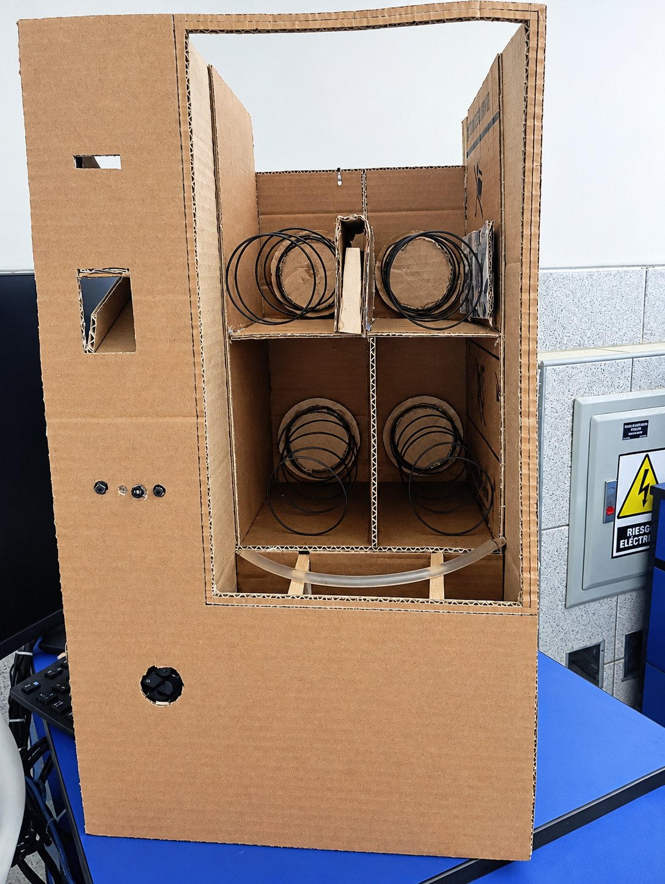
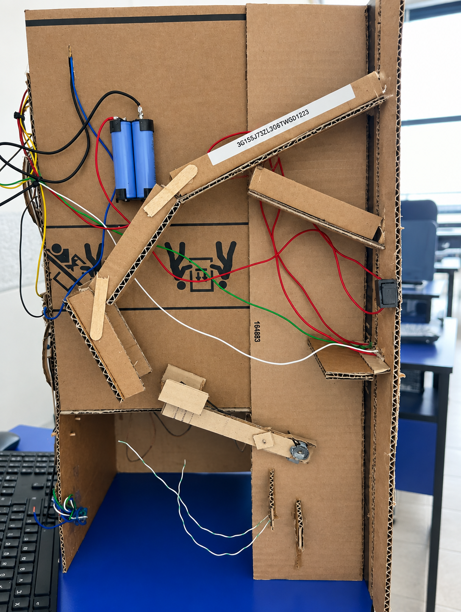
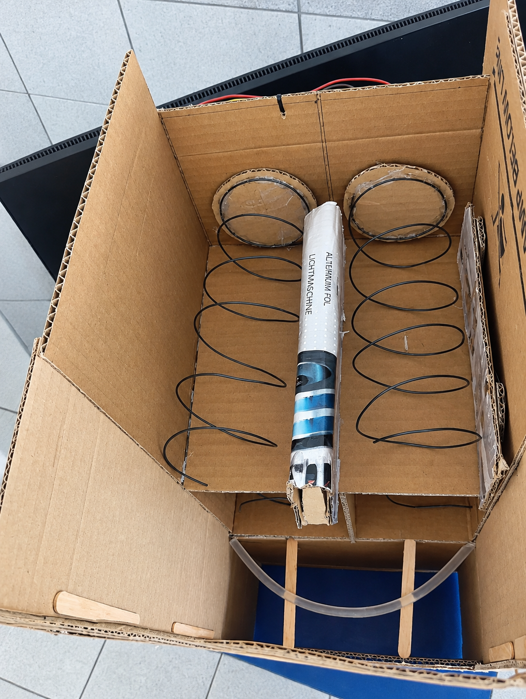
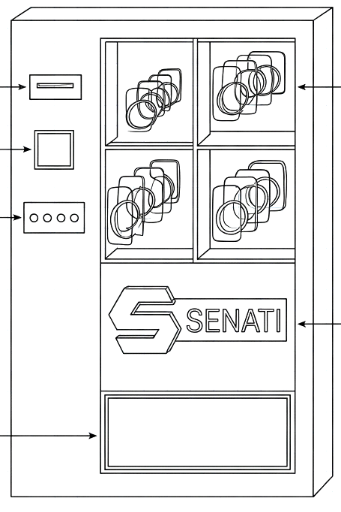

Acceso
Facilitar que los estudiantes puedan adquirir productos sin desplazarse demasiado de sus actividades académicas.
Presentamos una primera propuesta de cómo podría funcionar nuestra máquina expendedora dentro de SENATI.



La propuesta busca facilitar el acceso a productos durante la jornada académica, ofreciendo una alternativa rápida, práctica y accesible para los estudiantes de SENATI.
Representación de la estructura y distribución de los elementos propuestos para la máquina expendedora.
Consulta el documento donde se presenta la estructura inicial y organización del proyecto.
Documento que representa visualmente la secuencia de acciones y situaciones planteadas para el proyecto.
Representación inicial de la idea de la máquina expendedora antes de desarrollar el prototipo.

Facilitar que los estudiantes puedan adquirir productos sin desplazarse demasiado de sus actividades académicas.
Diseñar un proceso sencillo para seleccionar el producto y realizar la compra.
Crear una experiencia rápida y práctica que responda a las necesidades identificadas durante las entrevistas.